C++ is my bread and butter. I've been working with it in personal and academic projects for six years with no signs of stopping. Some standout projects include my Chip8 Interpreter, Lexicographical Analyzer, and library of Sorting Algorithms. This coming semester, I will be working on taking my lexer and using it to fully implement a compiler for a C-based language.
I have been working with Python for five years. I primarily use libraries such as TKinter, NumPy, and MatPlotLib for statistical analysis programs such as my Paint Blob Simulation and Wandering in the Woods Simulation. Alongside this, I commonly use Python for catch-all scripting solutions and algorithm efficiency analysis.
I have been working with Java for around three years. Primarily, I use it for prototyping simple projects and practicing DSA problems on websites like LeetCode. While it isn't my language of choice for most meaningful projects, I am very familiar with the language and more than capable when using it.

As any programmer needs to be, I am quite comfortable in the terminal. I've been working with Linux systems as my daily drivers for around a year, and have worked on a multitude of bash scripts for data processing, automating menial tasks, and improving my experience with Linux. Alongside this, I am more than familiar with the use of Git and GitHub in the terminal.

I've been practicing web development for a little over
a year now, and have found myself to be a quick learner.
In particular, I excel at taking mock-up designs and
turning them into modular and scalable code.
Some examples of this would be my mock-up site
Tabletop Tinkerer, and of course this
Portfolio Website!
When using libraries, I have experience with REST API's,
React, Express.js, and Node.js.
I have been working with C# in Unity Game Engine for around 4 years. This has led to projects such a modular 2D platformer controller and an endless runner, both of which I am currently in the process of reworking to be made public. Beyond that I am currently working on two main projects, being a ground up fan-remake of DuckTales for the NES and an implementation of Chess with unique piece behaviour and game modes!
These cards only give a summary;
click one for more information!

Assistant Manager
@ Menchie's Frozen Yogurt
I currently work as an assistant manager for Menchie's
Frozen Yogurt Fenton, Missouri.
My primary responsibilities include onboarding and
training new hires, alongside providing customer-facing
service with a focus on personal connection.


Lighting Designer
@ St. Louis Community College
I volunteer as a theatrical lighting designer at
the Meremac campus of St. Louis Community College.
My primary responsibilities include engineering lighting
designs for theatrical productions, programming cue
stacks, and coordinating instrument rigging and focus.
I collaborate directly with directors to
translate their creative vision into reality,
managing competing technical constraints under hard
deadlines in a live performance environment.
Chip8 Interpreter
 I am incredibly passionate about low level development,
and this project helped me to express that perfectly.
I learned a ton from it, with standout points being
CPU timing/emulation and low level memory management,
both key concepts I would like to take with me to similar
projects in the future.
I am incredibly passionate about low level development,
and this project helped me to express that perfectly.
I learned a ton from it, with standout points being
CPU timing/emulation and low level memory management,
both key concepts I would like to take with me to similar
projects in the future.
 View this project on
GitHub
View this project on
GitHub
Paint Blob Simulation
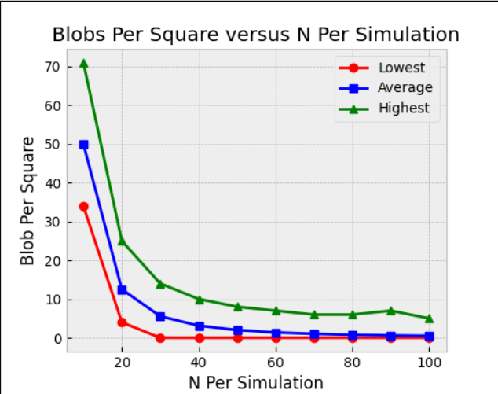
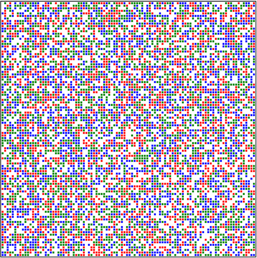
Lexicographical Analyzer
 Output displays the line/column of the first character in the token,
the token type, the characters that make up the token, and finally
the value of the token when applicable.
Output displays the line/column of the first character in the token,
the token type, the characters that make up the token, and finally
the value of the token when applicable.
Wandering in the Woods
Python Numpy MatPlotLib

Sorting Algorithm Library
C++Tabletop Tinkerer
HTML/CSS/JS Node.js Express.js React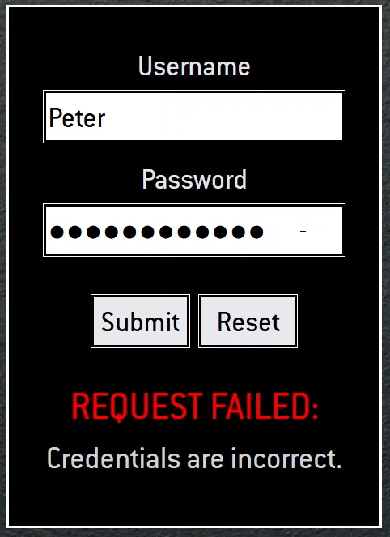
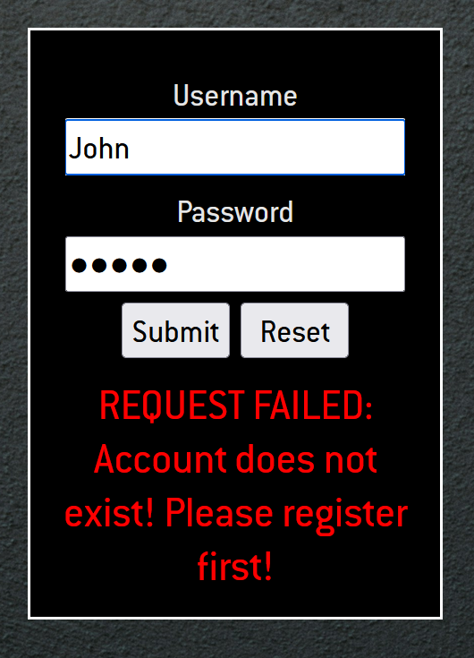
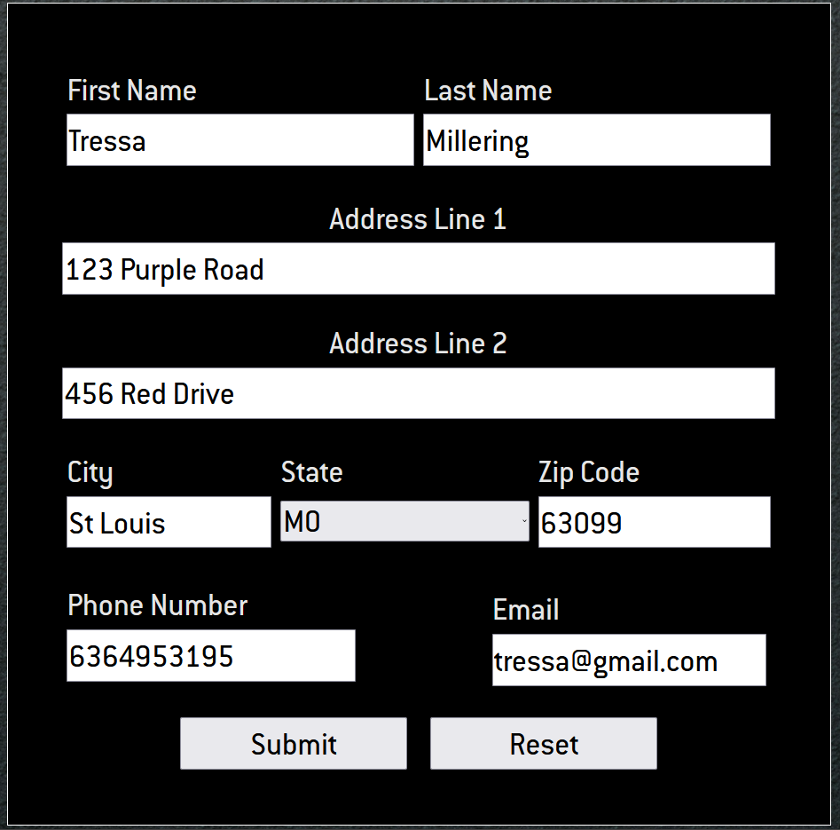
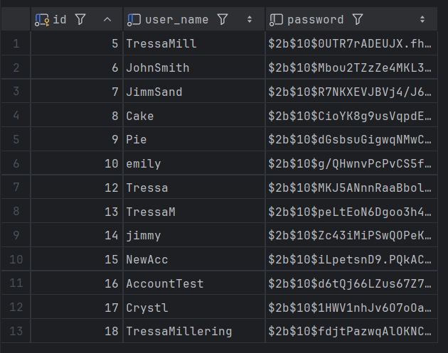
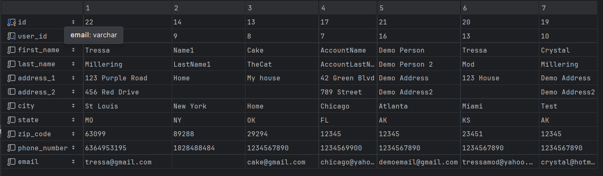
Note: The version hosted on GitHub includes all backend source code, but the backend is not running as it is not yet deployed to a public server. All static aspects of the site are still fully functional. Functionality shown through the screenshots above was captured on my machine hosting it locally. All information shown is for demo purposes.Portfolio Website
HTML/CSS/JS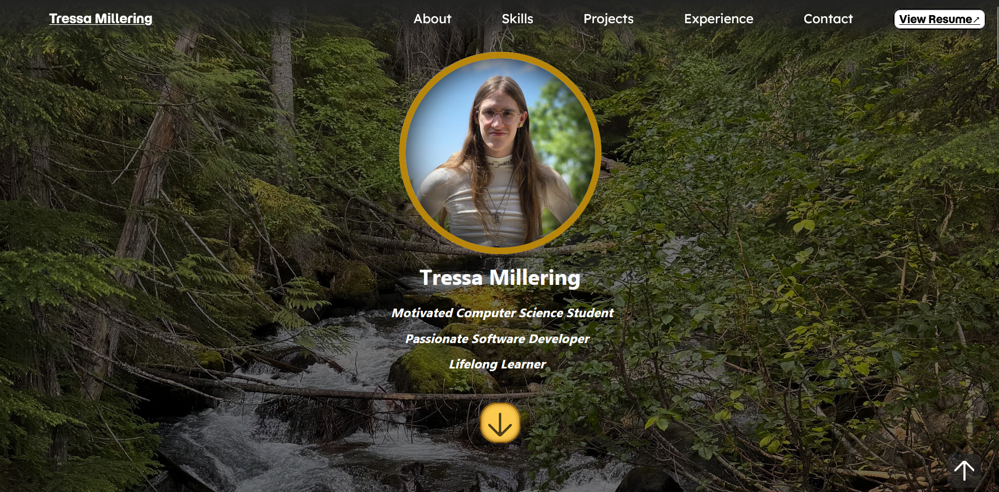
The site is modularly designed to keep things neat and organized and prevent element code from becoming convoluted or codependent. Instead of spaghetti code, it is made of clean building blocks; all of which is responsively designed.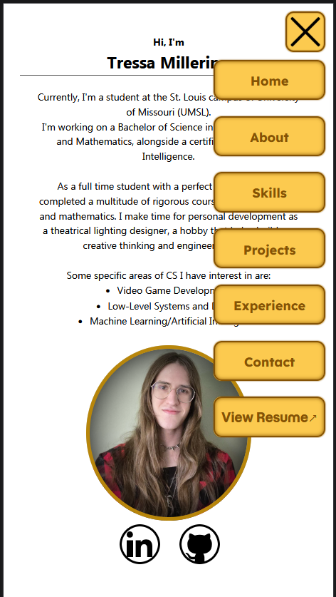
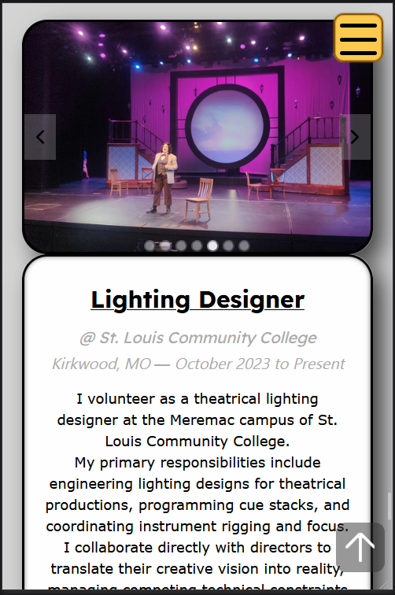
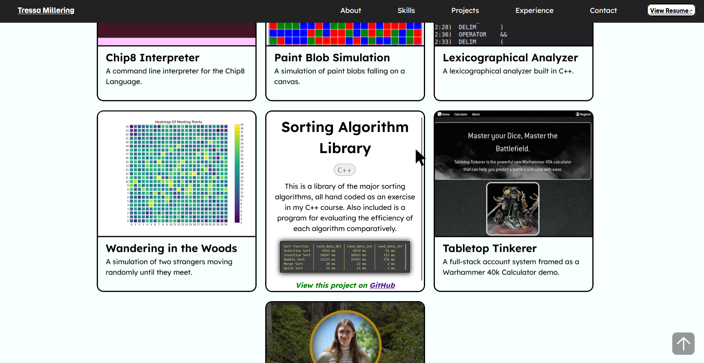
View this project on GitHub